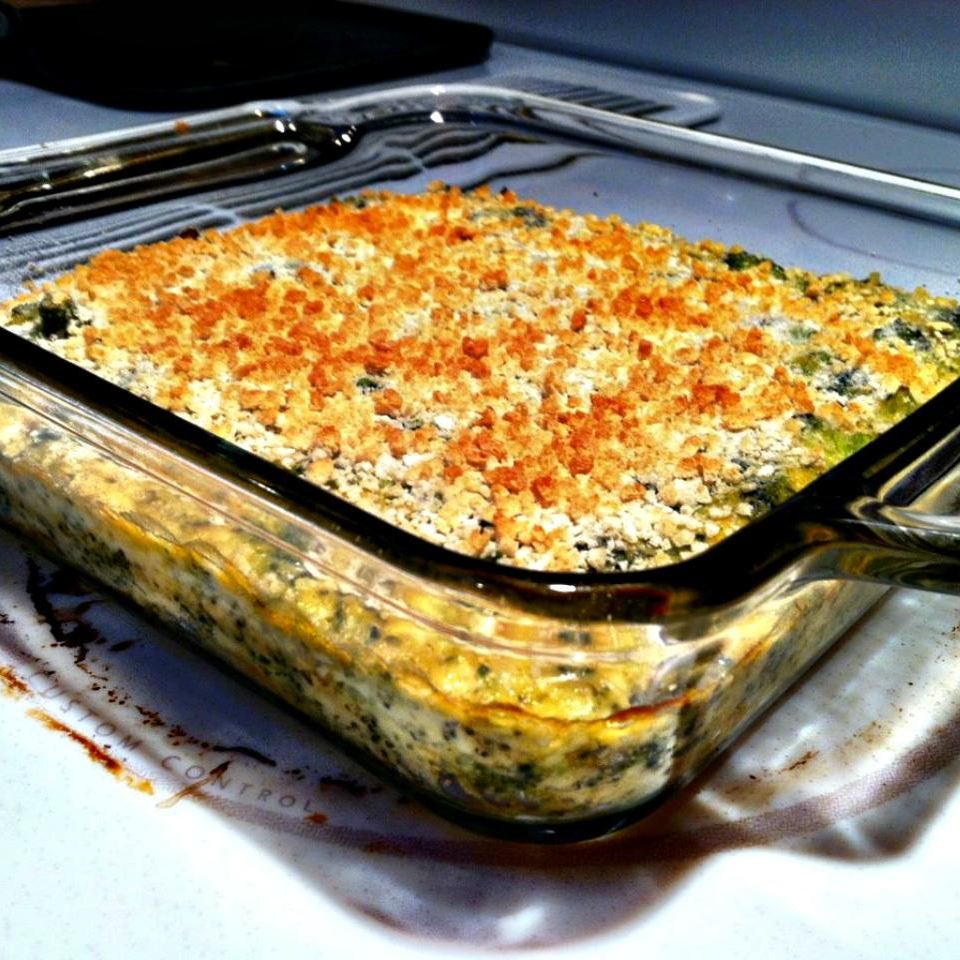

Home
Creamy Broccoli Recipe

Creamy Broccoli and Cheese Casserole
Creamy broccoli casserole that is a great way to get kids to eat their vegetables! If you are going to freeze or refrigerate until later, do not add the crumbs until you are about to cook it.
Ingredients:
- 2 pounds fresh broccoli, coarsely chopped
- 1 large onion, coarsely chopped
- ½ cup water
- ¼ cup all-purpose flour
- 1 (14 ounce) can evaporated milk, divided
- salt to taste
- 1 cup cubed sharp Cheddar cheese
- 2 tablespoons dry bread crumbs, or to taste
- 1 tablespoon butter, or to taste
Steps:
- Preheat oven to 350 degrees F (175 degrees C). Grease a 9x12-inch baking dish.
- Place broccoli and onion into a saucepan, pour in water, and bring to a boil. Reduce heat to low, cover, and cook until broccoli turns bright green and starts to become tender, 8 to 10 minutes.
- Whisk flour and 1/4 cup evaporated milk together in a bowl until smooth. Stir remaining evaporated milk and salt into broccoli. Gently stir flour mixture into broccoli mixture and bring to a simmer; cook until thickened, 2 to 3 minutes. Remove from heat and stir in sharp Cheddar cheese, mixing until cheese has melted into the sauce.
- Cook and stir bread crumbs with butter in a small skillet over medium heat until butter has melted and crumbs begin to give a toasted fragrance, 1 to 2 minutes. Remove from heat.
- Transfer broccoli mixture into the prepared baking dish and sprinkle crumbs atop casserole.
- Bake in the preheated oven until bubbling and browned, about 30 minutes.
Font